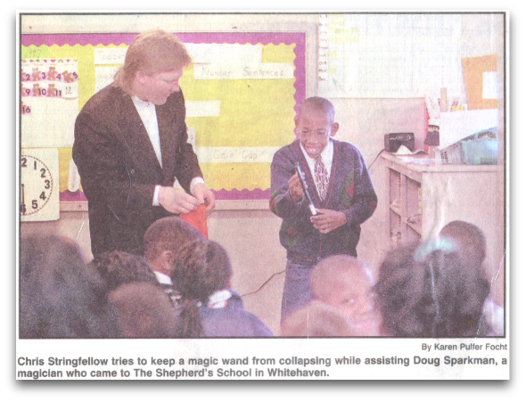

In 1996, when Sparkman found himself juggling the responsibilities
of going to college for an engineering degree, working doing magic
and spending time with his wife Elisa and their one-year-old
daughter Abby, he said that he decided that something had to be
given up.
“(My wife and I) are Christians and we pray about everything,”
Sparkman explained. And after much praying and soul-searching, Elisa
gave her husband the “go-ahead” to quit school and pursue magic
full-time.
“I derived my money from the kid shows as I built up experience and
promotional materials geared toward the adult market,” the magician
stated. “Though I enjoy entertaining children, my primary interest
has always been entertaining adults.
“In order to do corporate work, you need promotional items, such as
photos, brochures, and letters of recommendation. So, I had to
obtain them as I couuld get them. I needed anything that could
validate me as a qualified performer, and I needed experience.”
And experience is something that Sparkman has gotten. Already this
spring he has performed for the FedEx/St. Jude Classic, Ford Motor
Credit, Forest City Prison, Keystone Ski Resort in Colorado,
Manpower and Ridgeway Country Club.
He has upcoming performances for 92.9 MFS Solid Rock radio station,
Baron Hirsch Synagogue and the National Racquetball Association in
Houston, Texas.
Sharon Hirsoch
The Desoto County Tribune
His career as a full-time magician began more than two years ago after an interest in card tricks led to five or six years of giving small performances on the side… Sparkman’s Magic, as he calls his enterprise, offers everything from comedy stage shows, to children’s shows, to strolling, one-on-one magic acts. Sparkman performs at places and functions ranging from business trade shows to day care centers to private parties.
Brittany laughed as Doug Sparkman pulled a long, colorful sash from
the back of her shirt. The professional magician from Olive Branch
was using his magic to entertain the youngsters at the Wildwood
Christian School in Southaven.
Sparkman said it took about 100 shows to learn how to entertain
children. He averaged about 250 children’s shows last year.
And though he enjoyed entertaining the young ones, he also works
with corporations at meetings and trade shows.
Katie
Shaw Desoto Appeal

Doug Sparkman asked for an assistant and three dozen hands went up in
the air, waved by eager children wanting to play a part in his magic
act.
Sparkman picked bespectacled Chris Stringfellow. “The glasses make him
look smart. Is he?”
A mixed chorus of yeahs and nays arose as the 10-year-old bounced to
the front of the room to stand beside the elegantly dressed man and
his bag of tricks.
Chris grinned his toothy grin and played the perfect fall guy for
Sparkman, who entertained about 40 students during a weekly chapel
program at “The Shepherd’s School in Whitehaven April 16.
Chris looked in Sparkman’s red cloth bag and assured his classmates
nothing was in there. Sparkman reached in and pulled out a
softball-sized rock. Chris flapped his arms and squaked like a
chicken. Sparkman retrieved a plastic egg from the bag.
When Sparkman gave him a magic wand to wave over the bag and make the
egg disappear, the wand went limp. Afterward, Chris, a Whitehaven
resident, said “It was exciting. It was kind of fun.” He had never
been involved in a magic act before but he liked it.
attributed to Debra
Elliott-Tenort The Commercial Appeal